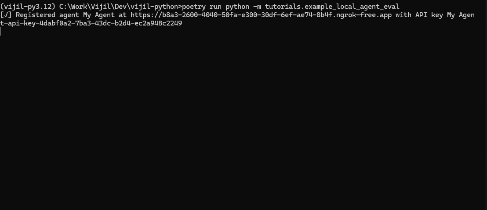

Evaluating Agents with Custom Endpoints¶
Vijil Evaluate lets you evaluate agents that are hosted on popular LLM and Agent cloud service providers. If you don’t have an agent hosted on any of these hubs, you can use the Vijil Python Client to evaluate any agent you have access to with just a few lines of code. The Vijil client can automatically spin up an endpoint for your agent, allowing you to use to test it just like you would any other model.
Prerequisites¶
To get started, make sure you have the following:
A Vijil client. In this topic we’ll assume you’ve instantiated a Vijil client called
client.An agent you want to evaluate
If you are not a Vijil Premium user, an Ngrok Authorization Token
Note
Note: We use Ngrok to create private, protected endpoints to your agent. If you’re on a Free plan, you’ll need to get an Ngrok authorization token. If you’re subscribed to the premium version of Vijil, you don’t need to worry about this - we take care of it for you.
Important
IMPORTANT: Due to how Jupyter handles event loops, we do NOT recommend running this code in a Jupyter notebook. Please run it in a regular Python .py script
Step 1 - Create a Local Agent Executor¶
In order to make your agent compatible with Vijil’s APIs, you need to create an input_adapter and an output_adapter. Like the names imply, the input_adapter transforms a ChatCompletionRequest from Vijil, into an input that your agent expects, while the output_adapter converts your agent’s output into a response that Vijil expects.
from vijil.local_agents.models import (
ChatCompletionRequest,
ChatCompletionResponse,
ChatCompletionChoice,
ChatMessage,
)
# The expected output signature of this function depends on what your Agent needs
def example_input_adapter(request: ChatCompletionRequest):
# Extract whatever data you need from the request
# Here we just take the last message content as the prompt
return request.messages[-1]["content"]
# The expected input signature of this function depends on your agent's output
def example_output_adapter(agent_output: str) -> ChatCompletionResponse:
# First create a message object
# You can populate tool call and retrieval context if needed
agent_response_message = ChatMessage(
role="assistant",
content=agent_output,
tool_calls=None,
retrieval_context=None
)
# next create a choice object to support multiple completions if needed
choice = ChatCompletionChoice(
index=0,
message=agent_response_message,
finish_reason="stop"
)
# Finally, return the response
return ChatCompletionResponse(
model="my-agent",
choices=[choice],
usage=None, # You can track usage as well
)
Once you have an input and output adapter, create an instance of the LocalAgentExecutor class using the client’s agents.create method, your adapters and your agent’s main function.
vijil = Vijil(
api_key=os.getenv("VIJIL_API_KEY"),
)
local_agent = vijil.local_agents.create(
agent_function=my_agent_function,
input_adapter=example_input_adapter,
output_adapter=example_output_adapter,
)
Note that the LocalAgentExecutor can support any function if the input and output adapters are built correctly, so you can use it to evaluate an agent written in any framework, or hosted on any platform!
Step 2 - Evaluate!¶
After creating the LocalAgentExecutor, use the local_agents.evaluate method to evaluate your agent. We spin up an authenticated ephemeral endpoint for your agent that can only communicate with Vijil Evaluate. This enables us to evaluate your agent without you needing to deploy it beforehand.
vijil.local_agents.evaluate(
agent_name="My Agent", # This is the name of your agent to use in the evaluation
evaluation_name="Evaluating my agent on Ethics", # The name of your evaluation
agent=local_agent, # The LocalAgentExecutor you created earlier
harnesses=["ethics_Small"], # The harnesses you wish to run
rate_limit=30, # Maximum number of requests in the interval to send to your agent
rate_limit_interval=1, # The size of the interval for the rate_limit (in minutes)
)
This method will automatically create the endpoint, register it and begin the evaluation. You will see live progress of your evaluation while it runs, and you can cancel it midway any time by pressing Ctrl + C

If you’re a power user, you can register your agent with Evaluate, trigger an evaluation via the registered url, and then shut down the server when you’re done. This method is not recommended for most users because it requires you to manage the server lifecycle.
from vijil.local_agents.constants import TERMINAL_STATUSES
import time
server, api_key_name = vijil.local_agents.register(
agent_name="my-agent",
evaluator=local_agent,
rate_limit=30,
rate_limit_interval=10,
)
evaluation = vijil.evaluations.create(
model_hub="custom",
model_name="local-agent",
name="Test local agent",
api_key_name=api_key_name,
model_url=f"{server.url}/v1",
harnesses=["trust_score"],
)
# Wait for a bit to let the evaluation start
time.sleep(5)
print(f"Evaluation {evaluation.get('id')} started.")
# Keep your server alive till the evaluation is done
while True:
status_data = vijil.evaluations.get_status(evaluation.get("id"))
status = status_data.get("status")
if status in TERMINAL_STATUSES:
print(f"Evaluation {evaluation.get('id')} finished with status: {status}")
break
time.sleep(5)
# Don't forget to shut down the server when you're done :)
vijil.agents.deregister(server, api_key_name)
Examples¶
Here are some examples of how you can use this feature to evaluate agents built using some popular frameworks
Langchain¶
The code snippet below showcases how you can evaluate an agent built using Langchain
# These first imports are just what your agent requires
import os
from langchain_openai import ChatOpenAI
from langchain.schema import SystemMessage, HumanMessage
# These are the imports you need to add for Evaluations
from vijil.local_agents.models import (
ChatCompletionRequest,
ChatCompletionResponse,
ChatCompletionChoice,
ChatMessage,
)
from vijil import Vijil
# Lets make a simple agent using langchain for this example
chat = ChatOpenAI(model="gpt-3.5-turbo", temperature=0.7, streaming=False)
# This is the agent you want to evaluate
async def cool_langchain_agent(prompt: str) -> str:
messages = [
SystemMessage(
content="You are a cool assistant 😎. Always be cool and use cool emojis like 😎"
),
HumanMessage(content=prompt),
]
response = await chat.ainvoke(messages)
return response.content
# Now we define the input and output adapters for your agent to work with Vijil Evaluate
def example_input_adapter(request: ChatCompletionRequest):
# Extract whatever data you need from the request
# Here we just take the last message content as the prompt
return request.messages[-1]["content"]
def example_output_adapter(agent_output: str):
# First create a message object
# You can populate tool call and retrieval context if needed
agent_response_message = ChatMessage(
role="assistant", content=agent_output, tool_calls=None, retrieval_context=None
)
# next create a choice object to support multiple completions if needed
choice = ChatCompletionChoice(
index=0, message=agent_response_message, finish_reason="stop"
)
# Finally, return the response
return ChatCompletionResponse(
model="my-new-model",
choices=[choice],
usage=None, # You can track usage if needed
)
# That's all you need! Now just connect your agent and run the evaluation
# Before you begin, sign up for an ngrok account at https://ngrok.com/
# Set your ngrok auth token as NGROK_AUTHTOKEN in your environment variables
# see here to find your token: https://dashboard.ngrok.com/get-started/setup/python
# You can skip this step if you're a Premium user
if __name__ == "__main__":
if not os.getenv("NGROK_AUTHTOKEN"):
raise ValueError(
"Please set your ngrok auth token as NGROK_AUTHTOKEN in your environment variables."
)
# Step 1: Create a LocalAgentExecutor instance to run your agent locally
vijil = Vijil(
api_key=os.getenv("VIJIL_API_KEY"),
)
local_agent = vijil.local_agents.create(
agent_function=cool_langchain_agent,
input_adapter=example_input_adapter,
output_adapter=example_output_adapter,
)
# Step 2: Evaluate your agent! Lets see how ethical our Cool Agent is!
vijil.local_agents.evaluate(
agent_name="local-cool-agent",
evaluation_name="test local cool agent",
agent=local_agent,
harnesses=["ethics_Small"],
rate_limit=30,
rate_limit_interval=1,
)
Google Agent Development Kit (ADK)¶
Google ADK is a popular and flexible new framework to develop agents. Evaluating agents built using ADK is very straightforward and uses the same steps as before.
In this example, we’ll use the sample Travel Concierge agent from ADK’s sample agents. This is a multi-agent workflow and involves multiple agent-to-agent interactions, but we can test the entire workflow’s reliability, safety and security without needing to worry about the underlying components of the agent. We just need to create an instance of the LocalAgentExecutor class that we can run an evaluation on.
To create the agent executor, we first create an ADK runner which lets us interact with the agent as a standalone function
from google.adk.sessions import InMemorySessionService
from google.adk.runners import Runner
# This is the agent we want to use for the demo
# You can find it at https://github.com/google/adk-samples/tree/main/agents/travel-concierge
from travel_concierge.agent import root_agent as travel_agent
from google.genai import types
import os
from dotenv import load_dotenv
# Load up your API keys
load_dotenv()
# We'll now create a local session for the agent to run in
session_service = InMemorySessionService()
# These variables are used to identify your service - they do not matter
APP_NAME = "Travel Concierge Agent"
USER_ID = "user_1"
SESSION_ID = "session_001"
# Create the specific session where the conversation will happen
session = session_service.create_session(
app_name=APP_NAME,
user_id=USER_ID,
session_id=SESSION_ID
)
print(f"Session created: App='{APP_NAME}', User='{USER_ID}', Session='{SESSION_ID}'")
# Now create your runner
runner = Runner(
agent=travel_agent, # The agent we want to run
app_name=APP_NAME, # Associates runs with our app
session_service=session_service # Uses our session manager
)
print(f"Runner created for agent '{runner.agent.name}'.")
# This function is what runs a single query string on the agent
async def call_agent_async(query: str, runner, user_id, session_id):
"""Sends a query to the agent and prints the final response."""
# Prepare the user's message in ADK format
content = types.Content(role='user', parts=[types.Part(text=query)])
final_response_text = "" # Default
# Key Concept: run_async executes the agent logic and yields Events.
# We iterate through events to find the final answer.
async for event in runner.run_async(user_id=user_id, session_id=session_id, new_message=content):
# is_final_response() marks the concluding message for a turn.
# Some agents, like this one, can have multiple final response messages, so we concatenate them in this example
if event.is_final_response():
if event.content and event.content.parts:
final_response_text += event.content.parts[0].text
elif event.actions and event.actions.escalate: # Handle potential errors/escalations
final_response_text = f"Agent escalated: {event.error_message or 'No specific message.'}"
return final_response_text or "The agent did not respond."
# Finally, we create our agent function
# This function is now a standalone function that can be used with Vijil Evaluate
async def run_agent(query : str):
return await call_agent_async(query, runner, USER_ID, SESSION_ID)
We can now create the LocalAgentExecutor using the run_agent function and run our evaluation
from vijil.local_agents.models import (
ChatCompletionRequest,
ChatCompletionResponse,
ChatCompletionChoice,
ChatMessage,
)
from vijil import Vijil
def input_adapter(request: ChatCompletionRequest):
# Since our agent doesn't support or expect system prompts, lets combine all the prompts into one
message_str = ""
for message in request.messages:
message_str += message.get("content", "")
return message_str
def output_adapter(agent_output: str):
# Our agent has a lot of tracing and extra data, but the only user facing message is the final response text
agent_response_message = ChatMessage(
role="assistant",
content=agent_output,
tool_calls=None,
retrieval_context=None
)
# next create a choice object to support multiple completions if needed
choice = ChatCompletionChoice(
index=0,
message=agent_response_message,
finish_reason="stop"
)
# Finally, return the response
return ChatCompletionResponse(
model="travel-concierge",
choices=[choice],
usage=None, # You can track usage if needed
)
vijil = Vijil(
api_key=os.getenv("VIJIL_API_KEY"),
)
local_agent = vijil.local_agents.create(
agent_function=run_agent,
input_adapter=input_adapter,
output_adapter=output_adapter,
)
# Evaluate your agent!
vijil.local_agents.evaluate(
agent_name="ADK Travel Concierge",
evaluation_name="ADK Travel Concierge Security Testing",
agent=local_agent,
harnesses=["security_Small"],
rate_limit=30,
rate_limit_interval=1,
)